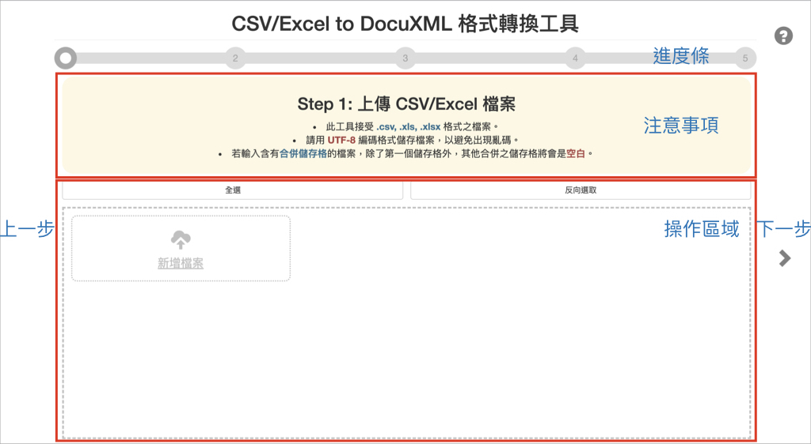

一、介面介紹

--- 加大間隔用 ---
二、使用步驟
若需觀看處理進度，請打開瀏覽器的開發人員工具觀看。
chrome: 網址列右側按鈕 > 更多工具 > 開發人員工具 > console 分頁
Step 1: 上傳 CSV/Excel 檔案
- 此工具接受 .csv, .xls, .xlsx 格式之檔案。
- 請用 UTF-8 編碼格式儲存檔案，以避免出現亂碼。
- 若輸入含有合併儲存格的檔案，除了第一個儲存格外，其他合併之儲存格將會是空白。
Step 2: 詮釋資料必填欄位對應設定
- 每份文件之檔名須唯一。
- 請確實填寫本頁再繼續，所有項目填寫完畢才能進行下一步。
- 此頁送出後不可隨意更改，煩請再三確認。
- 按下一步進行後續設定，若檔案數量眾多，需稍等一陣。
Step 3: 詮釋資料選填欄位對應設定
- 若不對欄位做對應設定，請維持請選擇的選項。
- 自訂欄位請使用半形英文輸入。
- 詮釋資料詳細說明請見 Metadata 規範表。
- 具底色之選項表示，建庫後具備後分類功能。
Step 4: 添加文件內文
- 僅將所提供之文檔併入 XML 中，多值欄位、註解、事件之編寫，使用者須自行符合 DocuXML 標準。
- 按下一步即開始轉換，若檔案較大，需稍等一陣。
- 方式一：從資料表中提取。

- 方式一：另外匯入 txt 檔案。
- 接受 .txt 純文字檔。
- 請用 UTF-8 編碼格式儲存檔案，以避免出現亂碼。